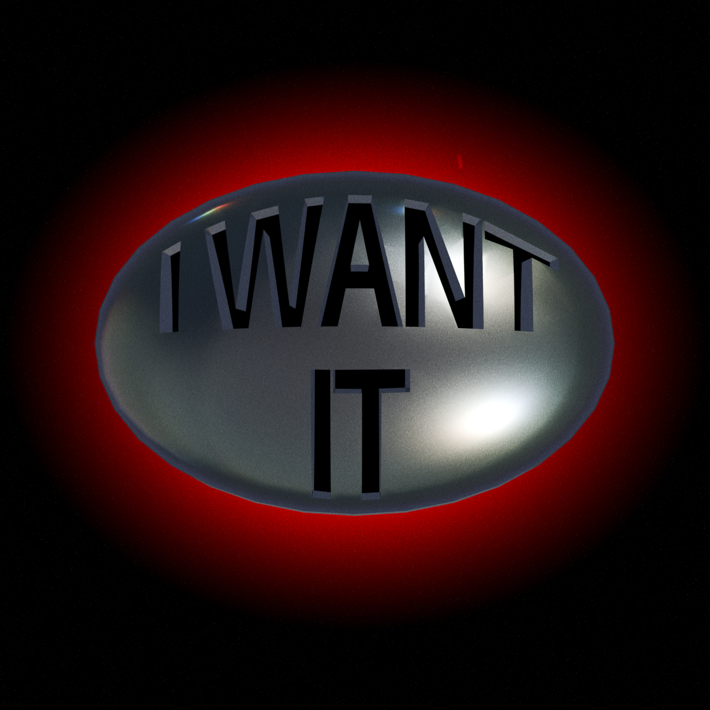

Hello! I'm Foomers, a music producer based in London. I make dance-pop, house, hyperpop and everything in between. I've produced for as a part of electronic dance act Junonuno under the pseudonym DJ Juno. I work out of my own studio in North London as well as at The Roundhouse as one of their in-house studio engineers. This gives me access to great facilities and spaces to record and produce music with artists.